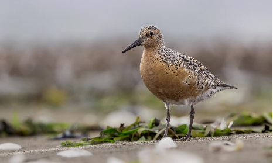

23-Jul-2024
Seguimiento de la migración del Correlimos Gordo

Correlimos Gordo - Zak Pohlen, USFWS.2
Correlimos Gordo (en inglés: Red Knot), como el detectado recientemente por el receptor Motus en Ankeny Hill Nature Center, son aves playeras migratorias que invernan en Sudamérica y se reproducen en alaska. Su ruta migratoria es desafiante y una de las más largas de todas. ave playera. Su población está disminuyendo y los investigadores quieren saber por qué.
Los Correlimos dependen de sitios de escala claves que se sabe que tienen alimento y recuperación favorables oportunidades para sostener su viaje. Según el Dr. Paul Kerlinger, un destacado experto sobre la migración de aves, “el correlimos, el correlimos y otras aves playeras hacen escalas más largas donde los recursos alimentarios son superabundantes. No es raro que el Playero Rojo pase diez días a dos semanas en un lugar antes de continuar su viaje”. 1
Cuando las aves reutilizan sitios año tras año, los ecologistas describen esto como “fidelidad al sitio”. Este comportamiento es beneficioso siempre que las condiciones sigan siendo favorables para encontrar Alimento confiable y seguridad contra los depredadores. Si los pájaros no se adaptan cuando el ambiente Sin embargo, es probable que su población disminuya.
A los investigadores les preocupa que ese pueda ser el caso del Correlimos Gordo en dos escalas clave sitios en Willapa Bay y Gray's Harbor en Washington. Los esteros están siendo amenazado por especies invasoras y perturbaciones humanas que impactan el ecosistema. El cambio climático también es un factor sospechoso, ya que el aumento del nivel del mar cubre los estuarios.
Torre Motus en Hatfield Marine Science Center – Card, Steve Lincoln County Leader 3
El seguimiento de Motus permite a los investigadores determinar cuánto tiempo permanecen los Correlimos Gordos estos sitios y cómo su comportamiento se ve afectado por el cambio en el entorno.
Aquí es donde entra Vanessa Loverti. Ella es el Servicio de Pesca y Vida Silvestre de EE. UU. Biólogo de Aves Playeras trabajando con el Programa de Hábitat y Aves Migratorias de la Región Pacífico. Su objetivo es desarrollar una red de estaciones de seguimiento Motus a lo largo de la ruta migratoria del Pacífico. que pueden detectar los transmisores en miniatura adjuntos a las aves playeras. Este sistema de seguimiento crea un mapa de su migración. Saber dónde se detienen y durante cuánto tiempo La estancia permite a los investigadores identificar hábitats críticos de los que dependen los Correlimos Gordos. También ayuda a los investigadores a tomar decisiones más informadas sobre la supervivencia del Correlimos Gordo y la impacto del cambio climático. Cuantas más torres, más preciso se vuelve el mapeo y El proyecto de Loverti ya ha añadido siete torres a la red.
Durante la reciente instalación de una torre en Newport, Loverti describió el impacto de su proyecto para Red Knots. “Son aves playeras y las están marcando con Motus etiquetas en México... Y luego, cuando migran a Alaska para reproducirse, se les marcan en el camino, para que podamos saber la duración de la estancia; cuánto tiempo están en los esteros. Si el cambio climático está ocurriendo y no se están trasladando a su caldo de cultivo, lo sabemos. que se mantienen cerca. Hay todo tipo de preguntas que podemos responder”.4
Loverti también coordina cada año los estudios sobre aves playeras de la ruta migratoria del Pacífico. Ella dijo, “Cada vez que hacemos un estudio como este, entendemos un poco más sobre las aves. hábitat, patrones de migración y genética. Aprendemos cosas que nunca esperábamos. aprender. Espero plenamente que podamos utilizar los resultados de este trabajo para avanzar conservación tanto del Playero Rojizo como de las aves en general”.5
La conservación de aves migratorias como el Playero Rojizo es una tarea demasiado grande para un única organización. El poder colaborativo de Motus permite a los científicos del Noroeste del Pacífico para acceder a los mismos datos que nuestros socios en México. Gracias a Gracias al trabajo de Loverti, los investigadores tienen acceso a una gama más amplia de datos y estarán en una mejor posición para ayudar a las aves a sobrevivir.
Por Vickie Stiteler
Credits:
1Kerlinger, P. (2009). How Birds Migrate (2nd ed.). Stackpole Books.
2Title: A Red Knot Calidris canutus roselaari standing on the beach at Gray's Harbor Credit: Zak Pohlen, USFWS Wildlife Biologist
Source: https://www.usgs.gov/media/images/red-knot-grays-harbor
Rights: Public Domain
3Título: Vanessa Loverti y Roy Lowe instalan la antena para una estación receptora Motus en el Centro de Ciencias Marinas Hatfield Crédito: Steve Card, Lincoln County Leader
Source: https://www.newportnewstimes.com/news/tracking-wildlife-with-technology /article_8b753eb2-fc3a-11ee-bae7-979279964fce.html
Rights: Personal permission granted.
4Card, S. (2024, April 29). Seguimiento de la vida silvestre con tecnología. Lincoln County Leader. https://www.newportnewstimes.com/news/tracking-wildlife-with-technology /article_8b753eb2-fc3a-11ee-bae7-979279964fce.html
5Levy, L. (2023, August 10). On the Minestrone-ness of Bird Subspecies: Some Words on the Totally Human Endeavor of Studying Red Knot Genetics. U.S. Fish and Wildlife Service https://www.fws.gov/story/2023-08/minestrone-ness-bird-subspecies#:~:text =%22Everything%20we%20learn%20about%20red,we%20never%20expected%20to%20learn